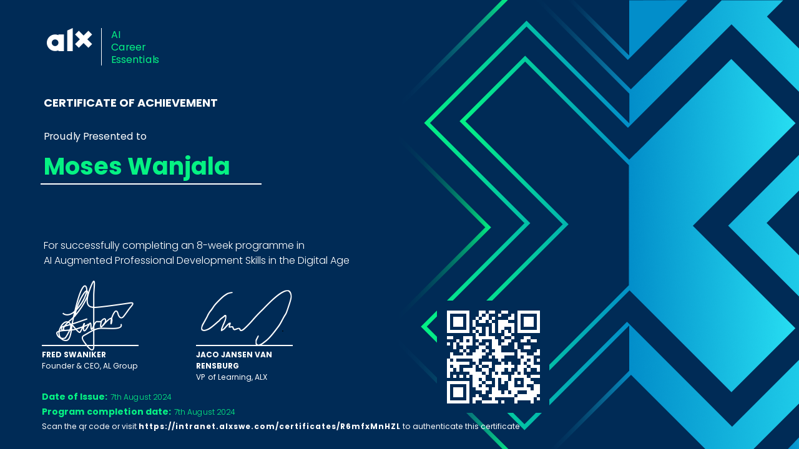
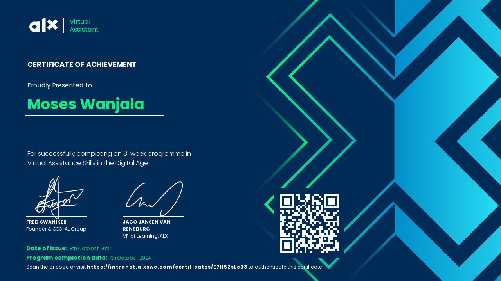

Cloud and Network Security | Cybersecurity | Virtual Assistant|
Moses Wanjala is a cybersecurity enthusiast with a strong foundation in Cloud and Network Security. My experience includes working on security challenges such as Flaws.cloud and CloudGoat, where I applied practical skills in vulnerability assessment, privilege escalation analysis, and secure cloud configuration. I am proficient in tools such as Wireshark, Linux (Kali), Metasploit Framework, OpenVAS and Nmap , with expertise in Python scripting and AWS services. I also have skills in virtual assistance and AI Career Essentials, which complement my technical expertise and adaptability in modern digital environments.
Cloud Platforms: AWS (EC2, S3, IAM, Lambda)& Azure
Cybersecurity: Cloud Security, Network Security, Vulnerability Assessment, Penetration Testing
Networking: VLANs, ARP Spoofing Defense, Packet Analysis
Tools & Technologies: Wireshark, Linux (Kali), GitHub, Metasploit Frameworks
Programming & Scripting: Python, Bash
Soft Skills: Problem-Solving, Analytical Thinking, Attention to Detail, Continuous Learning, Teamwork, Communication
Here are some of my certifications:
AI Career Essentials ALX Africa (2024)
Virtual Assistant ALX Africa (2024)
You can download my latest resume below:
Download ResumeIf you’d like to get in touch, please fill out the form below or email me at moseswanjalabwayo@gmail.com.